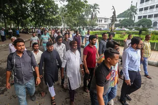
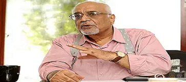
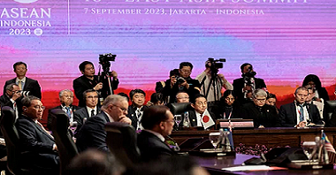
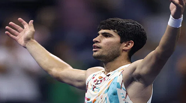
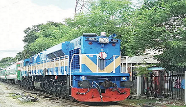

 Conversations with locals, including several witnesses, revealed that there was no incident of sabotage, or...
 After the 1971 liberation war, there have been three major achievements in Bangladesh-India relations, said economist Debapriya Bhattacharya, The first is the 1996 Ganges water sharing..
Russian foreign minister Sergey Lavrov is arriving in Bangladesh this afternoon for less than 24 hours from Jakarta, the..
 US Vice President Kamala Harris, Chinese premier Li Qiang and Russian foreign minister Sergei Lavrov attended an East Asia summit in Indonesia on Thursday..
 Carlos Alcaraz powered into the semi-finals of the US Open on Wednesday as rival Daniil Medvedev battled through a brutal heatwave to join the Spaniard in the last four
Nearly 82 km of stretch of rail route from Dhaka to Bhanga via Padma Bridge is completely ready to provide train services. A special train will travel on a trial run on the route today, Thursday.
Japan launched on Thursday a rocket carrying what it hopes will be its first successful Moon lander, live footage from the country's space agency showed.
After overcoming the group-stage hurdle with one win and one defeat, Bangladesh will face their biggest test so far in the Asia Cup 2023 when they take on one of the hosts Pakistan ..
Lionel Messi and Erling Haaland are among the leading contenders to win this year's men's Ballon d'Or, while
A Russian missile tore through an outdoor market in eastern Ukraine on Wednesday, killing 17 people and wounding dozens, as US Secretary of State..
Despite not having any history of criminal involvement, 74-year-old farmer Rezaul Karim was handcuffed along with his younger brother Shahidul Islam,
Conflict between followers of Jatiya Party top leaders Raushon Ershad and GM Quader is increasing over the leadership and authority of the party as the parliamentary election is nearing.
Over Tk 1 trillion has been paid to power plants as capacity charges in 14 years throughout the three terms of the present government with private power plants receiving a major portion.
In his budget speech for last fiscal, finance minister AHM Mustafa Kamal had promised that the inflation would be ..
{kind=link}